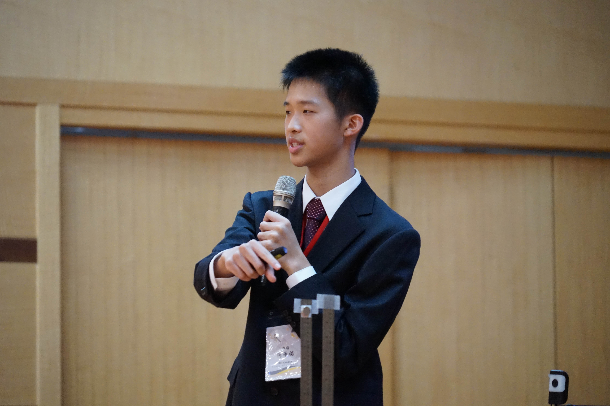
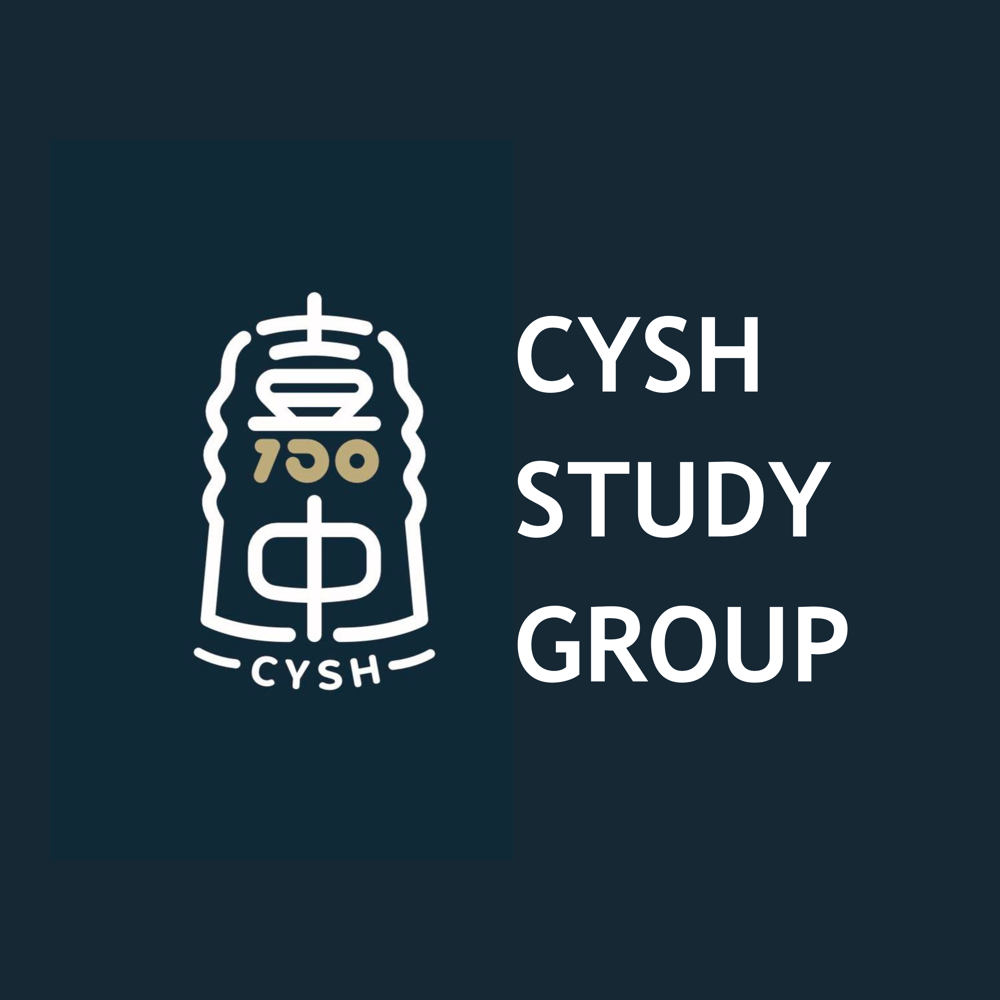
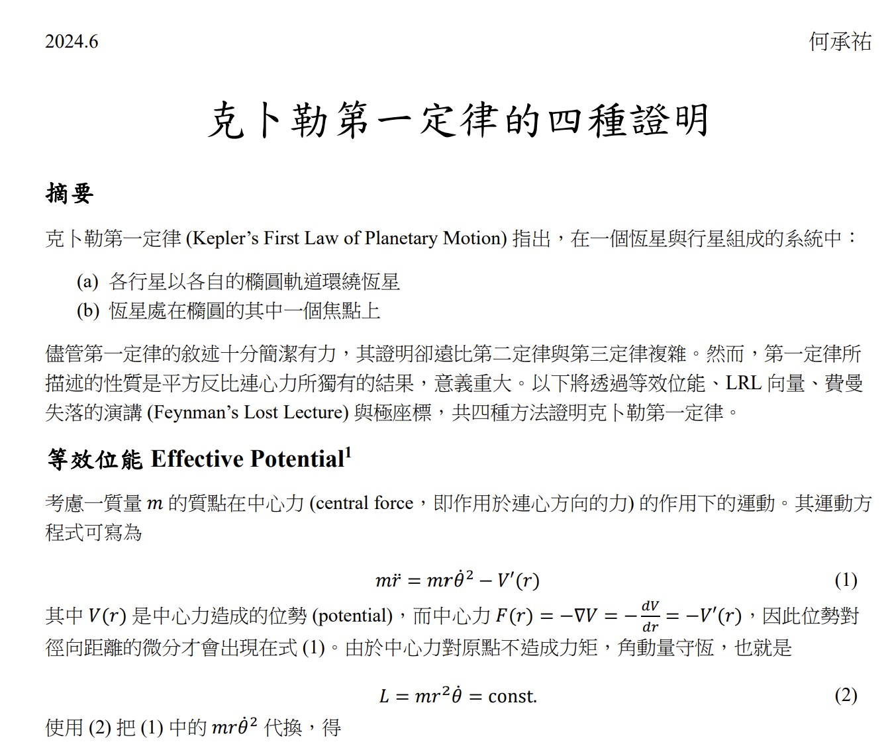
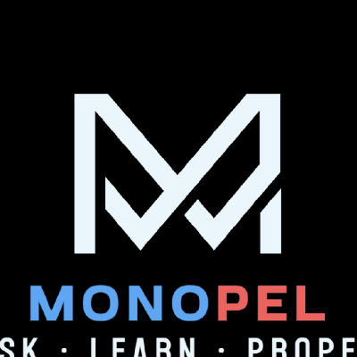
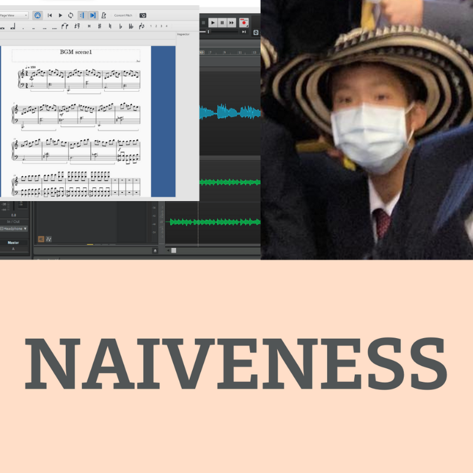

Academics
SAT
IELTS
1550/1600
8.0/9.0

I'm Cheng-You (Joe), a 17 y/o that enjoys physics, science research, coding, music production, being a social media content creator, and more!
I would like to pursue a physics-related major, and it's my dream doing so in the USA.
Cheng-You Ho
Journal of High School Science 8 (3): 30–46.
Online Access
PDF
Abstract
Cheng-You Ho, Kuan-Fu Huang
Journal of Emerging Investigators (under review)
PDF (draft version)
Abstract

Founder of the school study group covering Math, Physics, Chemisty, Biology and TYPT. 11-th grade students prepare Olympiad-level content and teach 10-th graders during lunch break, providing a head start for 10-th grade students on their academic competition journey.
Website
I have written educational articles related to math and physics, either for notetaking, study group materials, or just for fun!
List of articles
I have some experience with web developement (HTML, CSS, JS, Node.js) and Python. I've collaborated with others on projects such as Monopel. More can be found on my github page.
Github
From sheet music to production software like FL studio, I like to create my own music in my spare time.
Bandcamp